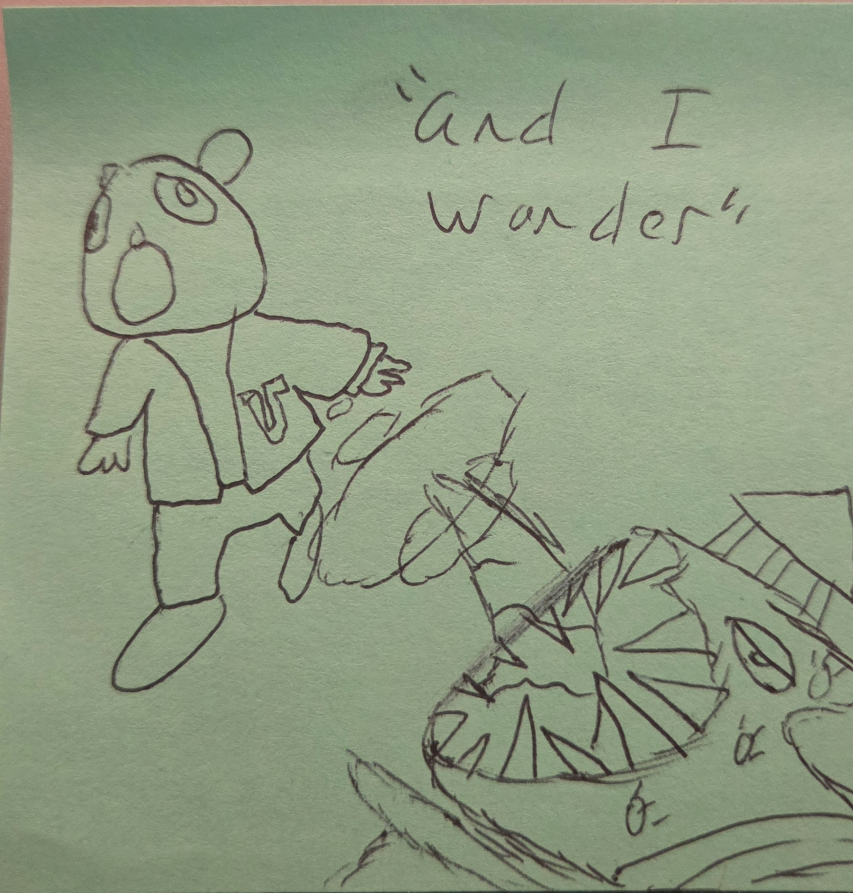
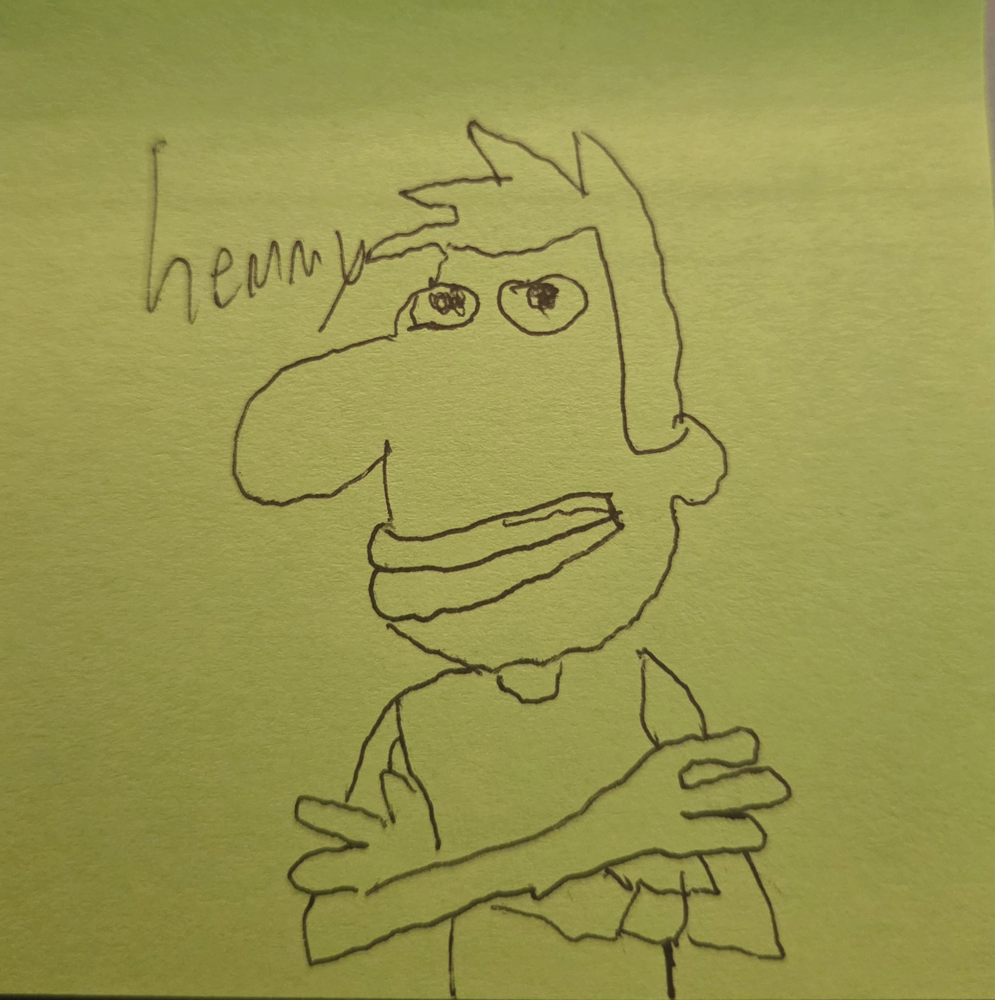
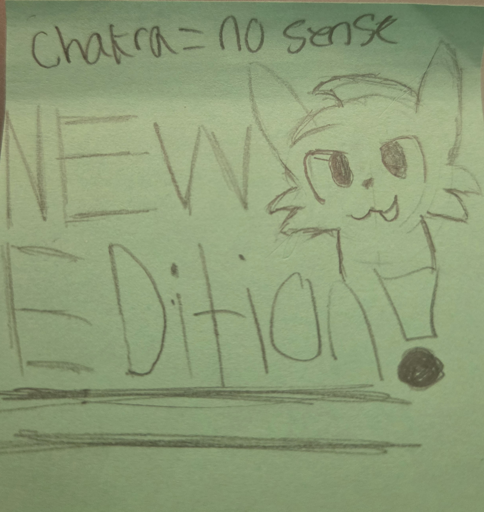
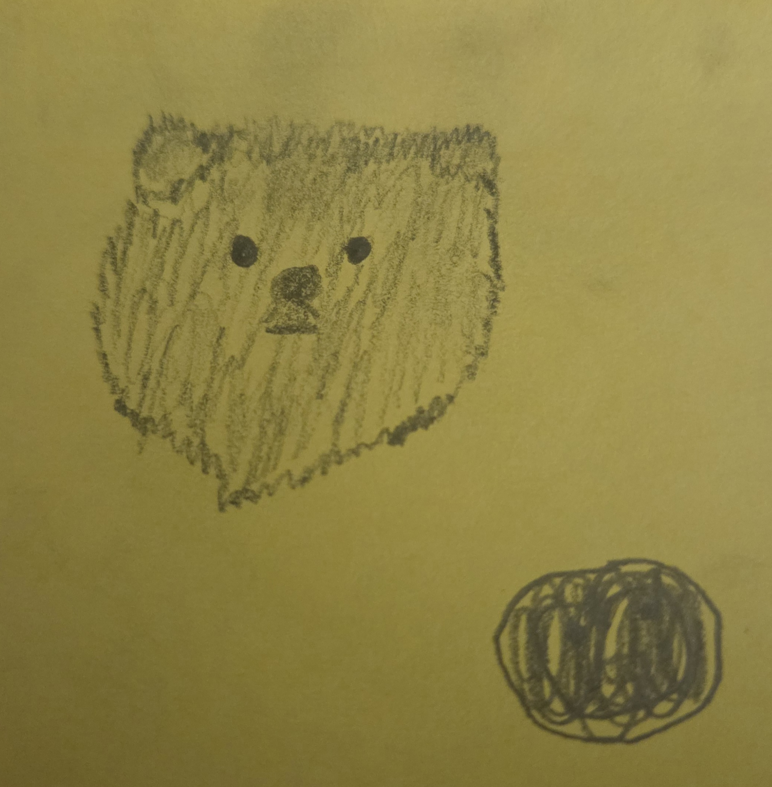
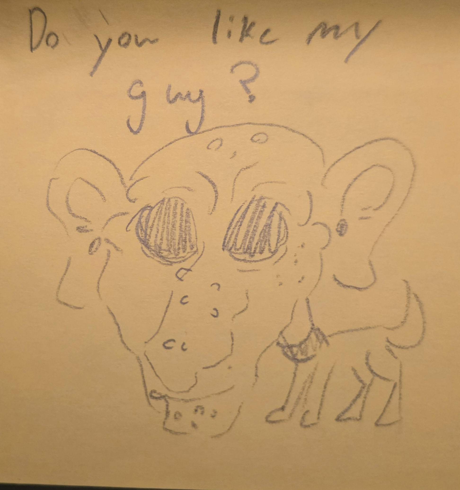
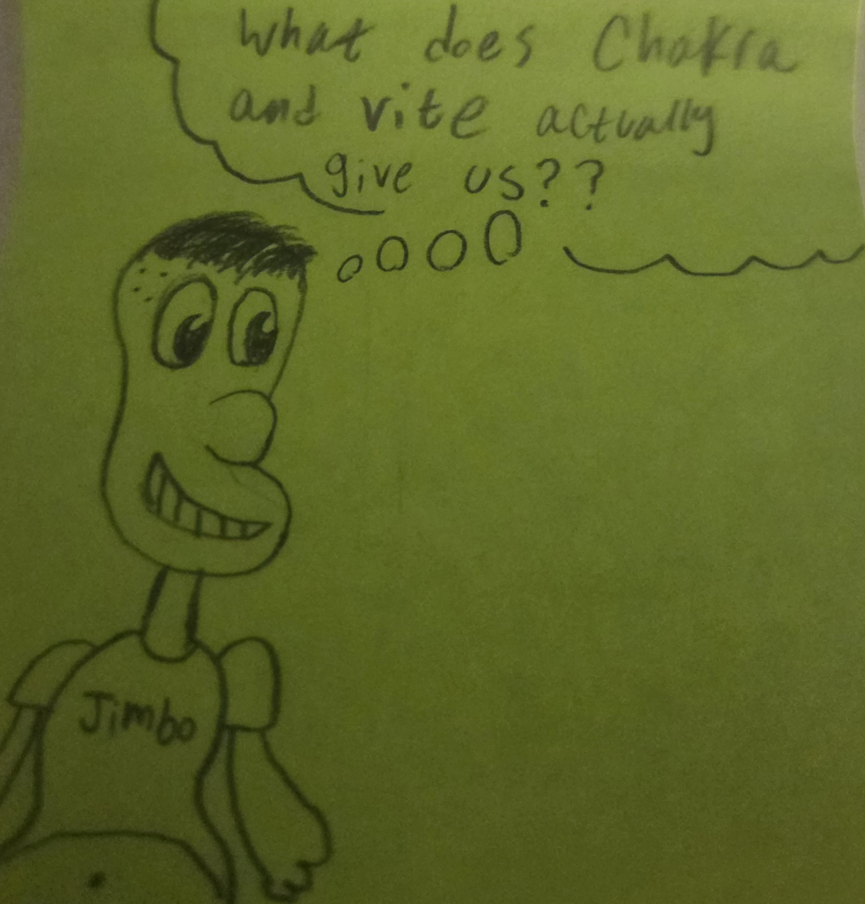
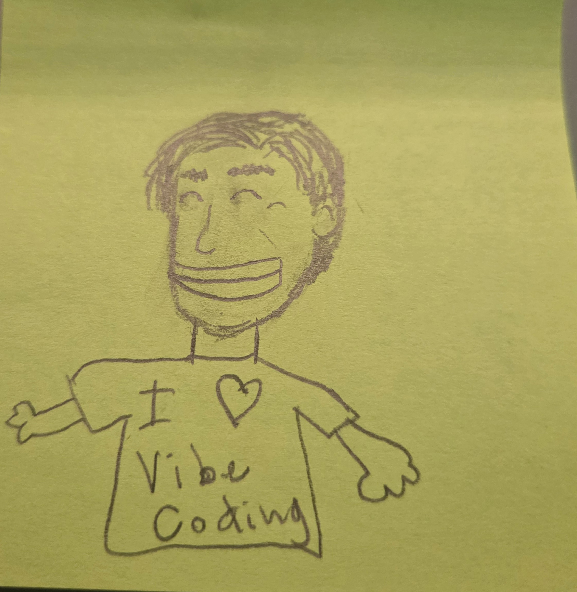

Vite
Vite gives us a fast React development environment. It starts the local website with npm run dev and updates the browser as we edit.
Questions from our sticky-note check-in, cleaned up and answered in one place. Use the search bar to find topics like GitHub, TSX, Chakra UI, Vite, input, hosting, and security.
Vite gives us a fast React development environment. It starts the local website with npm run dev and updates the browser as we edit.
React lets us build pages out of components. A .tsx file lets us write TypeScript logic and JSX UI in the same component file.
Chakra gives us ready-made components like Box, Text, Button, and Input so styling is easier.
Simple diagram showing where each part lives and how they connect.
Think of a kitchen making a BLT: one chef does every step, cooks bacon, toasts bread, assembles the sandwich. If we split work into components, one chef specializes in bacon, another assembles the sandwich. When we add a new menu item (like a Cobb salad), the bacon chef can still supply bacon to the new chef without everyone needing to know how to make bacon. Components let us split responsibilities, reuse work, and keep complexity isolated.
At first, probably not. Early versions of apps are usually simple and fragile.
That is why moderation is an important design problem. If users can post content, we eventually need rules, reporting, filtering, and consequences for misuse.
Different file types tell the tools how to read the file. .html is page structure, .css is styling, .js is JavaScript, and .ts is TypeScript.
A .tsx file is special because it can contain TypeScript logic and JSX, which looks like HTML but is actually used by React to build the page.
Think of GitHub like cloud storage for code, but with a history of every important save point.
You save files on your computer first. Then you commit changes to create a checkpoint. After that, you push the checkpoint to GitHub so it is backed up online.
The first goal is the layout: a feed, posts, and repeated cards.
After the core functionality works, you can customize colors, backgrounds, spacing, and style. Make it yours!
Right now, the browser loads a Vite React app. React renders components, Chakra UI helps style them, and our starter data may live in code or JSON files.
Later, the app can send and receive data from an API so posts are saved somewhere outside the browser.
Yes! After school or club time is usually the best time to get extra help, debug setup problems, or review React concepts!
After a listening session, I am voting for Malcolm Todd. The jazz influence wins this round.
Да ладно, Шестой — просто лучший!
.map()?.map() is a JavaScript array method that creates a new version of each item in a list.
In React, we use it to repeat UI. For example, if we have 5 posts in an array, .map() can create 5 post cards on the page.
We will use form tools like Input and Button. When the user types a post and clicks “Yap,” the app will collect that text.
Eventually, we need to save that post somewhere. A simple next step is JSON-style data. A more complete version would send the post to an API or database.
Chakra UI gives us pre-built React components. Instead of writing every div, button, input, and style from scratch, we can use components like Box, Button, Input, and VStack.
It helps us build React interfaces faster.
Yes, a basic HTML and CSS page can be simpler at first.
However, React helps when an app becomes interactive, has repeated UI, uses components, or changes data without rebuilding the whole page. Stick with the new tool long enough for the pattern to click.
eslint.config?A Vite project includes setup files so the app can run, check code, manage packages, and build for the web.
You do not need to understand every file immediately. For now, focus on src/main.tsx, src/App.tsx, and package.json.
I am doing good and very excited for summer. How are you?
Repo is short for repository. It is the project folder Git tracks.
A repo usually contains your code, project files, commit history, and a connection to GitHub.
Yes. AI is much more useful when you understand what it is creating.
If you know React, files, components, and errors, you can ask better questions, catch bad AI code, remove unnecessary code, and fix the app when something breaks.
Yes. That is one of the main reasons we use React.
Once the tweet card works, we can move it into its own component file. Smaller files are easier to read, test, reuse, and debug.
TSX does not use real HTML inside the component. It uses JSX, which looks like HTML but gets turned into JavaScript that React understands.
Inside JSX, curly braces like {tweet.name} let us jump back into JavaScript and display values.
Any app that displays user input has security risks.
One example is cross-site scripting, or XSS. That happens when a user tries to submit code instead of normal text and the website accidentally runs it. We need to treat user input carefully and protect the app before it goes public.
Yes. The goal is for everyone to publish a working web app so classmates can visit it and see what you built.
Use Chakra styling props such as bg, color, borderColor, p, borderRadius, and boxShadow.
Start small: change the page background, card background, text color, and button color.
Right now, npm run dev runs the app on your computer for development.
To make it public, we need to deploy it to a hosting provider. GitHub Pages can host static sites, but if we want to save new posts, we will eventually need a backend or database service too.
There may have been an issue when you first set it up. Please let me know and I am happy to help troubleshoot!
Vite gives us the development server and build tools for a modern React project.
Chakra UI gives us reusable visual components so we can style faster without writing every CSS rule manually.
Some changes are harmless, and React can keep showing the last working version while tools report an error.
Other changes will break the app immediately. The browser console and terminal are your best places to look when something seems wrong.
Start from the setup assignment, classwork 8-1.
Platforms like CodeHS often hide many setup details so students can focus on code.
With Vite and GitHub, we are seeing more of the real project structure professional developers use.
Yes. React can update part of the page when data changes.
For example, when a user submits a new post, we can update the list of posts and React can re-render the feed without refreshing the whole browser page.
During development, Vite watches your files. When you save, it sends updates to the browser.
React also uses a virtual representation of the page to figure out what needs to change instead of rebuilding everything from scratch.
A .tsx file is a TypeScript React file.
It lets us write component logic and HTML in the same place. The logic usually goes before return, and the UI usually goes inside return.
Yes. As a certified classroom sandwich expert, I will allow it.
Many websites use cloud services instead of owning physical servers.
Examples include hosted databases, serverless functions, authentication providers, and storage services. The main idea is that another company runs the infrastructure, and your app connects to it securely.
We will use form components, probably an Input or Textarea, and store what the user typed in React state.
Then the “Yap” button can add that new post to the list or send it to a backend later.
A Chakra Badge is a small label, often used for categories, statuses, or tags.
Take a look at the documentation here.
Chakra UI is not built into React. It is a separate package we install with npm.
React gives us the component system. Chakra gives us a library of styled components that work inside React.
One big file may feel easier at first, but it becomes hard to read and debug.
Smaller files let us separate responsibilities. A TweetCard file can focus only on showing one post, while App.tsx can focus on the whole page.
You have already finished some of the hardest setup steps: creating the project, running it locally, editing TSX, and connecting to GitHub.
Those skills transfer to many modern web projects, not just this one.
npm run dev? What is it?npm run dev starts the local development server.
It reads the project scripts in package.json, launches Vite, and gives you a local address where you can preview the app in the browser.
default keyword when exporting functions?export default marks one main thing that a file exports.
For example, export default App means another file can import the main App component without using curly braces.
Once the site is published online, other people can visit your website.
For classmates to see live posts that were added later, the app also needs a place to save and load those posts.
Eventually, yes. If we build a backend, we would likely need one endpoint to get posts and another endpoint to create new posts.
That is how the frontend and backend communicate.
Chakra lets us write many styles as component props.
For example, <Box bg="gray.800" p={4} borderRadius="lg"> is styling the box without writing a separate CSS file.
VS Code shows a Run button for some single files, like Python files.
A React app is a full project, not one file you run by itself. Use the terminal command npm run dev from the project folder instead.






